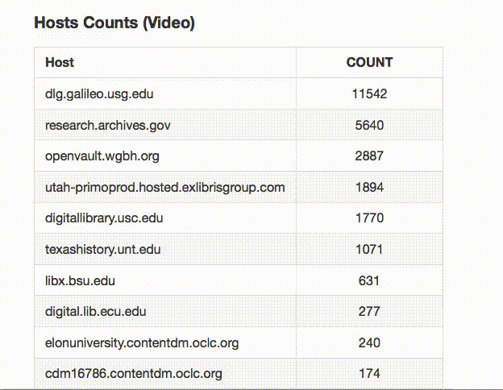

Accessible Digital Video Libraries for Humans and Machines
Drew Gordon - Data Curator, Databrary Project
drew.gordon@nyu.edu
Historical GIFs

Video In the DPLA
- 27,099 Moving image items (Feb 2016)
- 17 Hubs
- Standardized search, all in one place

Challenges to Automated Access
- Not able to store derivatives locally
- No consistent indication of resource location in metadata
- Wide diversity of implementations for delivering access copies at host sites
What's the deal with video?
- Relatively massive
- Restrictions and rights
- Encodings and formats
- Rich with information not immediately searchable
Some Questions
- For whom (and what) are we designing digital video libraries for?
- Accounting for uses that weren't conceivable 5 years ago?
More to videos than just watching them
...they're information too
Design Principles
- Distributed but connected collections
- Allow services from outside to connect to video resources
Solutions
- Open standards (e.g., HTML 5 <video>, schema.org )
- Provide resource location in metadata/API
Possibilities
- Thumbnail previews via streaming videos to FFMPEG
- Leverage nueral networks for automated metadata generation
- Automated transcription from anywhere
- Open Annotations???
Thank You!
drew.gordon@nyu.edu
@dogrdon
https://github.com/dogrdon/accidentalculture
 https://xkcd.com/1646/
https://xkcd.com/1646/